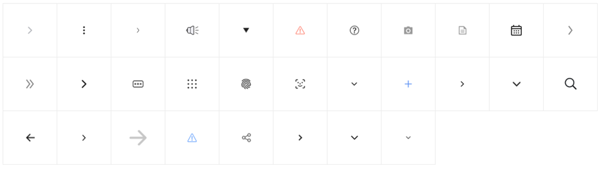
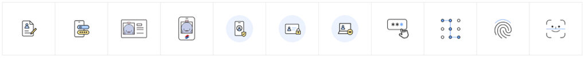
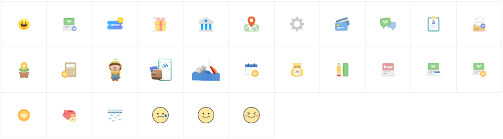

- Foundation
- Typography
- Iconography
- Colors
- Illustration
- Motion
- Validation
- Writing
Iconography
- Definition
- 아이콘은 개념과 요소, 동작 등을 나타내는 시각적 기호이다.
수협파트너뱅크 아이콘은 크게 시스템 아이콘, Appbar 아이콘, Line-Color 아이콘, 특수표시 아이콘, 콘텐츠 아이콘 등으로 나뉜다.
- Type
- 시스템 아이콘 (Line & Solid Type)

- Line-Color 아이콘 (본문 내 또는 상태 표시 콘텐츠 등에 사용)

- 특수표시아이콘 (목적성 콘텐츠 표시 사용)
- Bg-Color아이콘 (상태 콘텐츠 표시 사용)
- Line-Color 아이콘 (완료 또는 콘텐츠 안내 등에 사용)

- Color 아이콘 (배너 및 선택 콘텐츠 등에 사용)

- Login 아이콘 (로그인 콘텐츠 표시 사용)
- 3D 아이콘 (강조성 콘텐츠 표시 사용)
- 캐릭터 아이콘 (메인안내 콘텐츠 표시 사용)